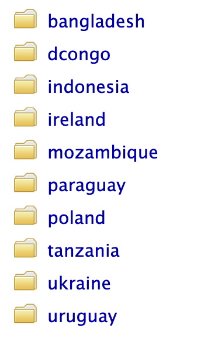
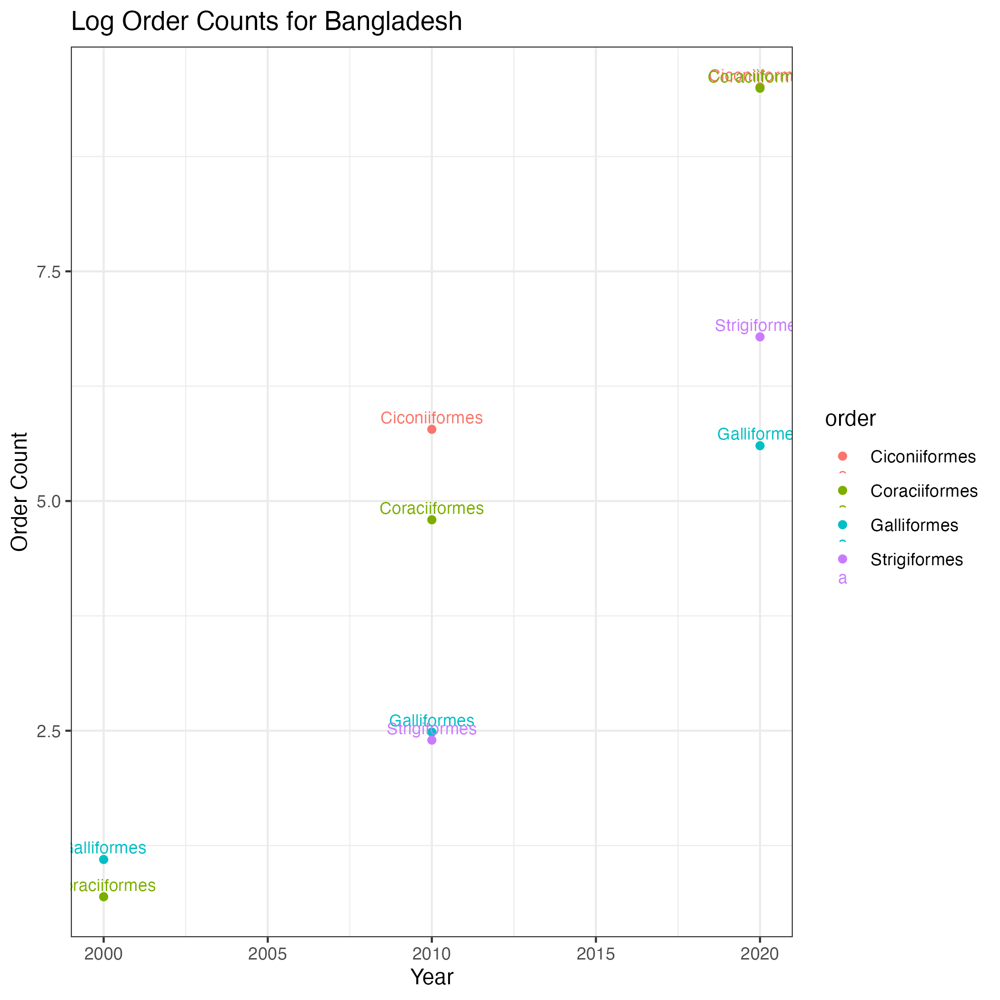
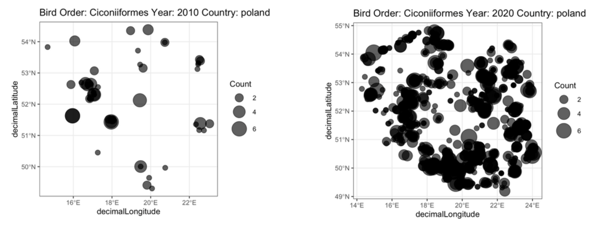

Predicting Biodiversity by Change in Forest Mass
INTRODUCTION
Biodiversity of the world makes living in the world a wondrous experience, and is crucial for survival of human beings. The world houses countless complex interactions between different species that maintain a delicate balance for the sustenance of life. This balance has been preserved for the past millions of years with change in dynamics that resulted in extinction of some species and evolution of others.
With human-kind’s taking precedence in the recent world history, this million year-old balance started to experience intense fluctuations. What started with the Industrial Revolution led to a massive emission of green house gasses that endangered the Ozone Layer and gradually raised the temperature of the Earth. Moreover, humans have shown small regard for life of other for the sake of earning material goods, causing the extinction of many, including specific tortoise and rhino species, and endangerment of many including Asian elephants and some leopard species. The harm committed by humans on nature include massive clearings of the forest and converting those lands into fertile farm-lands. This, together with wildfires, results in accelerating rates of deforestation, especially at the critical oxygen-producing regions including the Congo Rainforest and the Amazon Rainforest.
Rainforests are homes to the most diversity of life on the planet, and are critical sources of oxygen production and carbon trapping for the world. A world without rainforest is inhabitable by any living beings, and gradual destruction of rainforests is having many adverse affects, one of which include loss of biodiversity.
We are a group of two people who are passionate about animals, birds specifically. We are curious about trends in bird species’ population across the world in the past two decades. Counts of birds are relatively harder to keep track of as birds are smaller in size and inhabit nests dozens of feet above the ground. Compared to land animals and larger animals, making an estimate of the number of a specific bird species in the world poses a challange Therefore, we wanted to develop models that would take in different deforestation variables including new forest loss, new forest gain, net forest change, stable forest kept, and predict the number of unique species of birds dependent on the change in forests. Our model will allow us to predict how hypothetical changes in forest sizes will affect bird populations in the future, which can be very useful in developing policies that prioritize biodiversity, by making the threat of many animal’s extinction obvious through data.
DATA
We got our deforestation data from www.globalforestwatch.org and our bird species data from https://www.gbif.org.
To understand the impacts of deforestation, we used a deforestation dataset. This dataset, we called “net_tree_change.csv”, had important variables: gain, loss, net, gfw_area__ha, the latter indicating the total forest size at the beginning. Using this dataset, we calculated 10 countries with the most negative forest size change between 2000-2020, and 10 countries with the most positive forest size change between 2000-2020. Among these 10 countries for each category, we chose 5 that had enough data points so we could conduct analysis, but not too much data points like Brazil or the US, that would take up gigabytes of memory. The countries we chose for each category are highlighted below: 
Highest Net Forest Loss: Paraguay(PRY), Democratic Republic of Congo(COD), Mozambique(MOZ), Indonesia(IDN), Tanzania(TZA)
Highest Net Forest Gain: Uruguay(URY), Ukraine(UKR), Poland(POL), Ireland(IRL), Bangladesh(BGD)
GBIF(Global Biodiversity Information Facility) is home to data information belonging to thousands of different species, including the species “Aves” which is the taxonomic label describing birds. the GBIF database, houses hundreds of gigabytes worth of data, with each row(observation) indicating a species observation, with many information relating to the species and location observed per each row including kingdom, phylum, class, order, family, genus, species, countrycode, stateProvince, indivisualCount, decimalLatitude, decimalLongitude, day, month, year etc. 
We applied various 3 filters to the dataset to download the right data. These filters are highlighted below:
Country: 10 countries
Year: 2000, 2010, 2020
Order: Coraciiformes, Strigiformes, Galliformes, Ciconiiformes
We previously explained how we chose 10 countries, 5 of which has experienced more forest loss than gain, and the other 5, the opposite. Coraciiformes, Strigiformes, both live in forests and woodlands. Galliformes live on shrublands, and Ciconiiformes live on wetlands. We wanted to capture a high variance with the selection of these 4 orders. They also offered enough datapoints for analysis while not occupying high amounts of memory space. The GBIF database offers observations starting 1900, all the way until the present. We only acquired data from years 2000, 2010, and 2020, due to the limitation of limited memory space. This is in parallel with the time span captured by the deforestation data.
METHODS
1. We downloaded all the data manually and placed them into folders as highlighted by Fig 1. Our processing includes the following:
creating an all_bird_orders_data.csv dataset that combines all manually downloaded bird datasets accross countries, years and species
removed uninformative variables such as ID, issue
changing variables with numeric meanings from <chr> to <dbl>

- changed countryCode variable in forest_data to countryName for consistency
2. We merged two datasets forest_data with all_birds_data to have one dataset.
3. We calculated the counts of each bird order in each country, and tracked their change across time as shown in fig 3 for Bangladesh.
4. We visualized the geospatial change of bird order concentrations across time. Our deforestation data don’t unfortunately provide detail about the precise location of forest lost and gained, so it’s hard to infer correlations between changes in bird number concentrations and changes in forests.

The number of people in every country who engage actively in bird-watching and online reporting of bird sightings increased significantly between 2000 and 2020, possibly as a result of a combination of population increases, more widespread and easy access to the internet and mobile devices, and more awareness of personal and mental benefits of bird watching as a hobby. This meant that although the population of all the bird species is known to have decreased, the number of people seeking out and reporting bird sightings increased, making the data show a supposed increase in the number of birds sighted, when that isn’t truly the case. Thus, we needed to conduct some preliminary work before using the data.
The first form of pre-processing of the data we did was taking the natural log of the bird_count values for each of the observed species for each year, and stored these new values in a separate data frame. Next, in order to make the values in the new data frame easier for us to work with, we conducted a calculation:
\[ \frac{\ln(\text{bird count}) - \min(\ln(\text{bird count}))}{\max(\ln(\text{bird count})) - \min(\ln(\text{bird count}))} \]
This converted all the values to values between 0 and 1. This second step helped tackle another issue, which was of different countries having largely different numbers of observations for each bird species, which would depend on factors such as the biomass present in the country, the climate, the type of ecosystems that are prevalent, conservation laws, etc.
5. The next step was to train different models. We used our aforementioned new data frame first, but then also binned the points in bins of size 0.1 which were assigned with representative categorical one-hot encoded values from 1 through 10. This binned data would be used for models that aren’t regression.
In our process to try and find a model that would accurately predict changes in bird sightings based on forest area changes, we trained and tested 5 different models.
Model 1: Support Vector Machines with Polynomial Kernels. We used the binned version of our data to train the support vector machine. Additionally, when processing the data for the recipe used in this model, we let all the variables of type ‘double’ remain as is. However, the variables ‘species’ and ‘country’ which were characters, were changed to a factored form and one-hot encoded. With the ‘year’ variable, in order to ensure that there is a clear difference between the difference in time between 2000 - 2010 and 2000 - 20202, we chose not to one-hot encode the variable, but rather assigned the value 0 to 2000, 1 to 2010, and 2 to 2020, ensuring that the concept of uniform time difference was correctly represented in the form of distance on our visuals. We then used cross-validation with v = 4 to tune the parameters of this model. However, although the accuracy results of this model were not the worst (0.23),and had some predictive power, when we plotted the results in the below confusion matrix heat map, we were able to see that the model simply categorised all the observations into bin 3. This makes sense given a large portion of our data did fall into bin 3, but it also Indicated that the model was unable to capture the underlying nuances and differences between the observations, making it ineffective.
Model 2: Radial Basis Support Vector Machine Similarly to the previous model, we used the binned data to train and test this model, and used cross-validation with v = 4 to tune the cost value as well as the radial basis sigma value. Upon testing the model with our data, we found that the mean accuracy was consistent across different cost values, which indicates an error in the process. The accuracy mean in this case is 0.22. Upon visualising the results, we find a similar result to the previous model wherein the model predicts every single observation to be falling into the third bin, which defeats the purpose and does not capture any differences.
we have bird count change from 2000-2020. So for each bird order for each country, there will be one value. We intend to find correlations, to see if deforestation parameters can predict change in population of a bird order by being consistent across countries.
We analyzed the networks performance, concluded that we expect some correlation for bird species inhabiting forests. We trained 2 SVM models, one with the radial basis kernel and the other with the polynomial kernel. We trained 2 random forests, one for regression, one for classification. We trained a single knn on a classification task.
For all of our models, we found minimum correlation between some variables. (elaborate)
While this work doesn’t purport any direct correlation between changes in forest size and biodiversity of birds, there are many liitations to this study that might have been the reason for a lack of correlation. Somme of this study’s limitation’s include disproportionate amount of observations between 2000 and 2020. There are only a few observations in 2000, and so many observations of birds in 2020, so the models struggled to learn patterns to distinguish between different countries and species, where the year always was the biggest predictor, regardless of taking log values and normalizing. So when I see an enourmous increase between 2000,2020, in a species, it doesn’t imply a major increase in animal’s population, but the number of observation.
In order to tackle this problem, first i. on the model_data, which is the grouped (country, year, order) summarize n() for count, I applied log function to order_counts, so that the increase from 2000 to 2010 is not as sharp, implying that the bird populations don’t increase exponentially: log_count variable ii. on the log-scaled data called model_data_log, I normalized each log_count globally between 0-1.
DISCUSSION:
Our original goal for this project was to use various variables relating to the extent of deforestation and changes in forest size to predict the number of sightings of different bird species in several selected countries. We planned on comparing the number of sightings per bird species in a country in the years 2000 and 2020, as downloading the data for every single years would be too computationally expensive for our devices. In order to obtain our numerical values for the number of bird sightings, the data-collectors relied on sightings from bird-watchers and other citizens of the country.
Given our results, at this point, we would like to talk about the place of this work in literature.
If we were to be able to train a model in the future that would be able to more accurately use the rate of deforestation in certain countries to predict the number of birds threatened by deforestation, as well as which species of birds are most impacted by deforestation, we could streamline our conservation and protection efforts as we would be able to tell which species are most in need of protection. Additionally, this would be an extremely positive use of data that is collected from public observations and bird-watching practices, allowing the community at large to help with conservation and protection of endangered species. We strongly believe that any steps towards better time, capital, and resource allocation when it comes to biodiversity conservation and habitat restoration can go a long way, and having a highly accurate means of knowing which species are struggling the most to adapt to the deforestation that persists in many areas of the world would be a large leap. We hope that our project could act as a starting point to the long journey of more efficient and hopefully effective wildlife conservation.
Thank you for following along. This work was done by Ulas Ayyilmaz and Ishika Keswani as a final project in our Computational Statistics Class, led by Jo Hardin <3.
Variable names used for future reference: all_birds_data, filtered_bird_orders, filtered_forest_data, joined_data, joined_data, country_density_map, country_density_map_logscale(counts in log_scale), model_data_log, model_data_log_normalized, model_data_log_normalized_bins, train_data_bins, test_data_bins